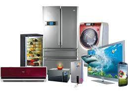
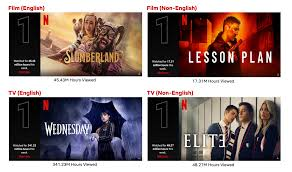
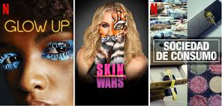

DESCRIPCIÓN DE LOS ARTICULOS



Comienzo
Articulos
Publicidad
Sitio de internet
Buscador de imagen
Buscador Google
Series
En concreto este tipo de series tenemos que subrayar que se pueden clasificar en cinco clases: la microserie, la antología, la comedia de situación, la miniserie o la teleserie.
De la misma forma, tampoco hay que pasar por alto la existencia de lo que se da en llamar series documentales. En este caso, la base de las mismas suelen ser hechos reales que tienen lugar en cualquier lugar del planeta y en cualquier sector. De esta manera, se han puesto de moda las series documentales que nos cuentan cómo es el día a día de los profesionales que trabajan en las áreas de urgencias de los hospitales.
EL PORQUE CREAR SERIES
Entre las series más esperadas de 2022 hay mucho del Universo Marvel, el regreso al mundo de Game of Thrones, adaptaciones de películas clásicas, una nueva temporada de Euphoria y una que otra historia real interesante.
Además de nuevas películas como La masacre de Texas (que traerá de vuelta a Sally Hardesty, la Final Girl de la película original de los años 70), la secuela de Doctor Strange y más de Batman y Aquaman, el nuevo año significa que el streaming se va a llenar de nuevos títulos y proyectos, y hay unos cuantos que ya tienen a todos emocionados.
Netflix, como siempre, tiene una gran selección encabezada por las nuevas temporadas de algunas de sus series más populares, Apple Tv reúne a Jared Leto y Anne Hathaway para contar la historia real de los creadores de WeWork, y Amazon se prepara para el enorme y muy esperado estreno de su serie que será una precuela para las películas de Lord of The Rings, y ese es solo un poco de lo que cada plataforma tiene preparado para sorprender y ganar más seguidores.